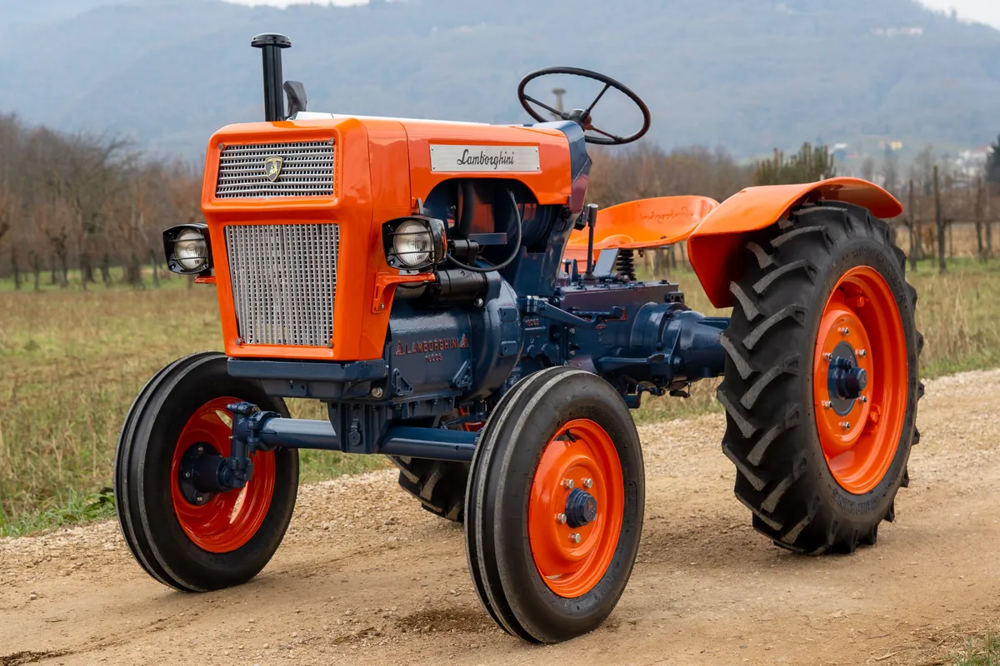

Geschichte (laut Legende): Lamborghini baute früher Traktoren (Lamborghini Trattori). Enzo Ferrari meint Lamborghini könne nur Traktoren bauen,so begann Ferruccio Lamborghini Sportautos zu produzieren (1963)
gegründet: 1963 Automobili Lamborghini
Gründer: Ferruccio Lamborghini
Hauptsitz: Sant'Agata Bolognese (Italien)
Logo: 1879 Stierkampf (Murciélago) überlebte 24 Lanzenstöße, wurde verschont (Symbol für Stärke)

Lamborghini 1R
Besonderheit: von einem alten Militärfahrzeug zu einem traktorähnlichen Fahrzeug umgebaut